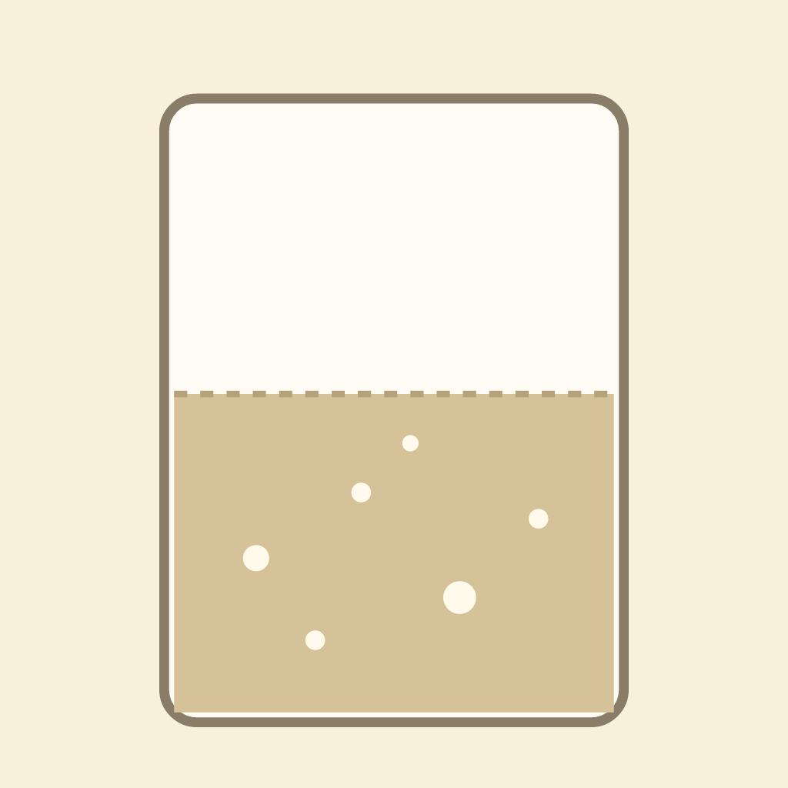
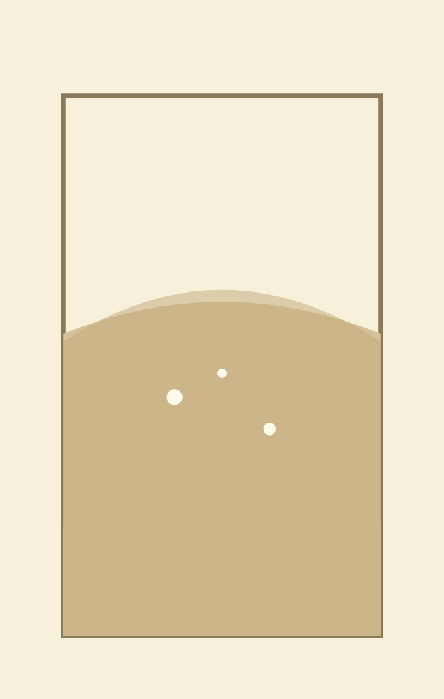

Slow Light 01: a starter rising Shader: 01.glsl, about 540 characters. Period is one hour (u_time/3600). Bubbles are a hashed grid, not a simulation. Colour table: dough base #d6c299, air #f8f0db, bubble #fffaeb.

Slow Light 01: a starter rising Shader: 01.glsl, about 540 characters. Period is one hour (u_time/3600). Bubbles are a hashed grid, not a simulation. Colour table: dough base #d6c299, air #f8f0db, bubble #fffaeb.

Slow Light 02: a starter's dome, rising and falling Shader: slow-light/02.glsl. Still: slow-light/02.svg. Period is one hour. The level rises with a plateau near t = 0.88, the centre domes after t = 0.6, and the edges sink after t = 0.85. Bubbles appear more often as the dome nears peak. Known gap: at the hour boundary the level still jumps back to the start, since the shader has no reset curve.